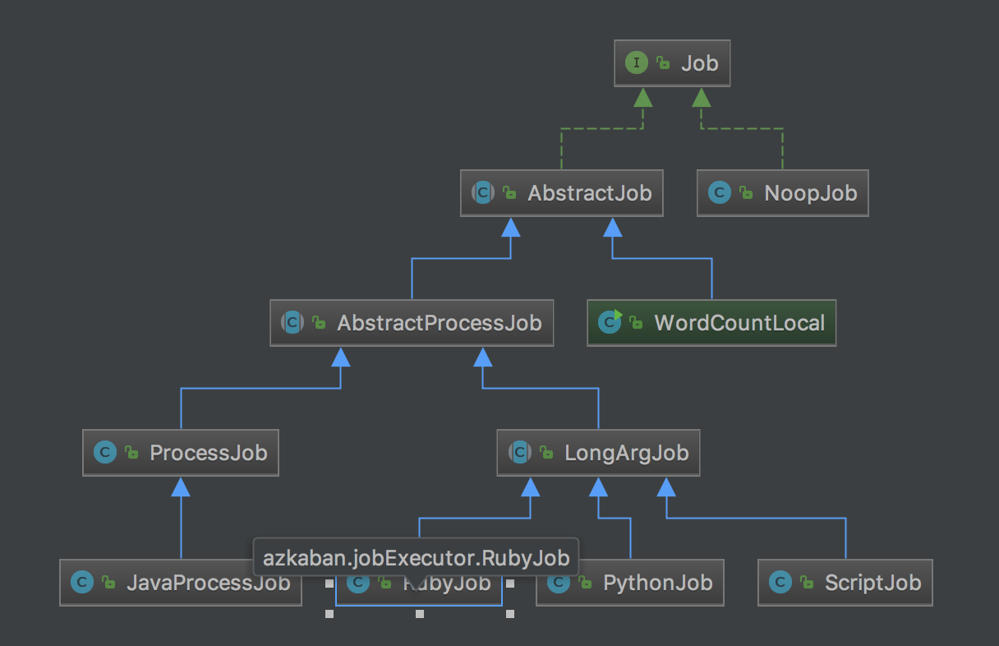

Azkaban 源码分析
简介
因为 azkaban 功能比较简单，所以在实际使用中存在一些需求用对 azkaban 进行定制，比如：
- 跨 Flow 依赖
- 在 job 执行失败时短信报警
- Flow 的 start node 可能需要检测满足一定条件再触发(时间，数据是否就绪)
- 可能需要设置 job 优先级，在集群资源紧张时，优先完成高优先级作业
因而需要对 azkaban 的源码有一定的了解，所以花费了几天时间，读了一下 azkaban 的源码，下面是做的笔记：
从 flow 提交开始
当我们提交一个 job 时，数据提交到：http://host/manager, 参数中带着一个 action 的值为 upload，根据这写能找到一坨 zip 上传相关的代码，当然这些都不是重点，重点是：ProjectManager#uploadProject 方法，在这个方法中完成了对 zip 包的解析、构建 flow、flow 保存到数据库。
ProjectManager#uploadProject 方法中有这样一行代码：
final Map<String, ValidationReport> reports = validatorManager.validate(project, file);这个方法内部会调用经过层层调用，最终会调用 DirectoryFlowLoader#loadProjectFromDir 方法，此方法就是从 job 文件构建 flow 的方法：
public void loadProjectFlow(final Project project, final File baseDirectory) {
this.propsList = new ArrayList<>();
this.flowPropsList = new ArrayList<>();
this.jobPropsMap = new HashMap<>();
this.nodeMap = new HashMap<>();
this.flowMap = new HashMap<>();
this.errors = new HashSet<>();
this.duplicateJobs = new HashSet<>();
this.nodeDependencies = new HashMap<>();
this.rootNodes = new HashSet<>();
this.flowDependencies = new HashMap<>();
// Load all the props files and create the Node objects
loadProjectFromDir(baseDirectory.getPath(), baseDirectory, null);
jobPropertiesCheck(project);
// Create edges and find missing dependencies
resolveDependencies();
// Create the flows.
buildFlowsFromDependencies();
// Resolve embedded flows
resolveEmbeddedFlows();
}这里面的几个方法调用就是构建 flow 的几个步骤，job 加载，属性检查，依赖处理，构建 flow, 子流处理。
下面先来看 job 文件加载：
private void loadProjectFromDir(final String base, final File dir, Props parent) {
final File[] propertyFiles = dir.listFiles(new SuffixFilter(PROPERTY_SUFFIX));
Arrays.sort(propertyFiles);
for (final File file : propertyFiles) {
final String relative = getRelativeFilePath(base, file.getPath());
try {
parent = new Props(parent, file);
parent.setSource(relative);
final FlowProps flowProps = new FlowProps(parent);
this.flowPropsList.add(flowProps);
} catch (final IOException e) {
this.errors.add("Error loading properties " + file.getName() + ":"
+ e.getMessage());
}
this.logger.info("Adding " + relative);
this.propsList.add(parent);
}
// Load all Job files. If there's a duplicate name, then we don't load
final File[] jobFiles = dir.listFiles(new SuffixFilter(JOB_SUFFIX));
for (final File file : jobFiles) {
final String jobName = getNameWithoutExtension(file);
try {
if (!this.duplicateJobs.contains(jobName)) {
if (this.jobPropsMap.containsKey(jobName)) {
this.errors.add("Duplicate job names found '" + jobName + "'.");
this.duplicateJobs.add(jobName);
this.jobPropsMap.remove(jobName);
this.nodeMap.remove(jobName);
} else {
final Props prop = new Props(parent, file);
final String relative = getRelativeFilePath(base, file.getPath());
prop.setSource(relative);
final Node node = new Node(jobName);
final String type = prop.getString("type", null);
if (type == null) {
this.errors.add("Job doesn't have type set '" + jobName + "'.");
}
node.setType(type);
node.setJobSource(relative);
if (parent != null) {
node.setPropsSource(parent.getSource());
}
// Force root node
if (prop.getBoolean(CommonJobProperties.ROOT_NODE, false)) {
this.rootNodes.add(jobName);
}
this.jobPropsMap.put(jobName, prop);
this.nodeMap.put(jobName, node);
}
}
} catch (final IOException e) {
this.errors.add("Error loading job file " + file.getName() + ":"
+ e.getMessage());
}
}
final File[] subDirs = dir.listFiles(DIR_FILTER);
for (final File file : subDirs) {
loadProjectFromDir(base, file, parent);
}
}逻辑很好理解，总结一下：
- 先读取 .properties，再读取 job
- 先读取父文件夹，再读取子文件夹
jobPropertiesCheck 是对一下配置的取值是否合法的检测
resolveDependencies 不仅会检查依赖是否存在还会创建依赖的边：
private void resolveDependencies() {
// Add all the in edges and out edges. Catch bad dependencies and self
// referrals. Also collect list of nodes who are parents.
for (final Node node : this.nodeMap.values()) {
final Props props = this.jobPropsMap.get(node.getId());
if (props == null) {
this.logger.error("Job props not found!! For some reason.");
continue;
}
final List<String> dependencyList =
props.getStringList(CommonJobProperties.DEPENDENCIES,
(List<String>) null);
if (dependencyList != null) {
Map<String, Edge> dependencies = this.nodeDependencies.get(node.getId());
if (dependencies == null) {
dependencies = new HashMap<>();
for (String dependencyName : dependencyList) {
dependencyName =
dependencyName == null ? null : dependencyName.trim();
if (dependencyName == null || dependencyName.isEmpty()) {
continue;
}
final Edge edge = new Edge(dependencyName, node.getId());
final Node dependencyNode = this.nodeMap.get(dependencyName);
if (dependencyNode == null) {
if (this.duplicateJobs.contains(dependencyName)) {
edge.setError("Ambiguous Dependency. Duplicates found.");
dependencies.put(dependencyName, edge);
this.errors.add(node.getId() + " has ambiguous dependency "
+ dependencyName);
} else {
edge.setError("Dependency not found.");
dependencies.put(dependencyName, edge);
this.errors.add(node.getId() + " cannot find dependency "
+ dependencyName);
}
} else if (dependencyNode == node) {
// We have a self cycle
edge.setError("Self cycle found.");
dependencies.put(dependencyName, edge);
this.errors.add(node.getId() + " has a self cycle");
} else {
dependencies.put(dependencyName, edge);
}
}
if (!dependencies.isEmpty()) {
this.nodeDependencies.put(node.getId(), dependencies);
}
}
}
}
}总结一下：
解析每个 node 的 dependences 属性，检查依赖的 node 是否存在，是否只有一个
最后得到的数据结构如下：
Edge: (sourceNode,targetNode) dependencies: [(sourceNode.name, Edge),...] nodeDependencies:[(targetNode.name,dependencies),...]
然后是 buildFlowsFromDependencies ：
private void buildFlowsFromDependencies() {
// 根据上面提给出的数据结构来看这段代码
final HashSet<String> nonRootNodes = new HashSet<>();
for (final Map<String, Edge> edges : this.nodeDependencies.values()) {
for (final String sourceId : edges.keySet()) {
// 这里拿到的都是被依赖过的 node ,也就是逻辑上不可能是 rootnode 的节点
// root node 指的是没有依赖的节点
nonRootNodes.add(sourceId);
}
}
// Now create flows. Bad flows are marked invalid
final Set<String> visitedNodes = new HashSet<>();
for (final Node base : this.nodeMap.values()) {
// Root nodes can be discovered when parsing jobs
// 找到 root 节点
// root 节点是 prop 中配置指定的 node (CommonJobProperties.ROOT_NODE)
// 或者不在 nonRootNodes 中的节点
if (this.rootNodes.contains(base.getId())
|| !nonRootNodes.contains(base.getId())) {
this.rootNodes.add(base.getId());
final Flow flow = new Flow(base.getId());
final Props jobProp = this.jobPropsMap.get(base.getId());
// Dedup with sets
final List<String> successEmailList =
jobProp.getStringList(CommonJobProperties.SUCCESS_EMAILS,
Collections.EMPTY_LIST);
final Set<String> successEmail = new HashSet<>();
for (final String email : successEmailList) {
successEmail.add(email.toLowerCase());
}
final List<String> failureEmailList =
jobProp.getStringList(CommonJobProperties.FAILURE_EMAILS,
Collections.EMPTY_LIST);
final Set<String> failureEmail = new HashSet<>();
for (final String email : failureEmailList) {
failureEmail.add(email.toLowerCase());
}
final List<String> notifyEmailList =
jobProp.getStringList(CommonJobProperties.NOTIFY_EMAILS,
Collections.EMPTY_LIST);
for (String email : notifyEmailList) {
email = email.toLowerCase();
successEmail.add(email);
failureEmail.add(email);
}
flow.addFailureEmails(failureEmail);
flow.addSuccessEmails(successEmail);
flow.addAllFlowProperties(this.flowPropsList);
constructFlow(flow, base, visitedNodes);
flow.initialize();
this.flowMap.put(base.getId(), flow);
}
}
}上面方法中比较重要的地方都已经注释过了，其中还调用了两个方法比较重要的方法，constructFlow,flow.initialize()
private void constructFlow(final Flow flow, final Node node, final Set<String> visited) {
visited.add(node.getId());
flow.addNode(node);
if (SpecialJobTypes.EMBEDDED_FLOW_TYPE.equals(node.getType())) {
final Props props = this.jobPropsMap.get(node.getId());
final String embeddedFlow = props.get(SpecialJobTypes.FLOW_NAME);
Set<String> embeddedFlows = this.flowDependencies.get(flow.getId());
if (embeddedFlows == null) {
embeddedFlows = new HashSet<>();
this.flowDependencies.put(flow.getId(), embeddedFlows);
}
node.setEmbeddedFlowId(embeddedFlow);
embeddedFlows.add(embeddedFlow);
}
final Map<String, Edge> dependencies = this.nodeDependencies.get(node.getId());
if (dependencies != null) {
for (Edge edge : dependencies.values()) {
if (edge.hasError()) {
flow.addEdge(edge);
} else if (visited.contains(edge.getSourceId())) {
// We have a cycle. We set it as an error edge
edge = new Edge(edge.getSourceId(), node.getId());
edge.setError("Cyclical dependencies found.");
this.errors.add("Cyclical dependency found at " + edge.getId());
flow.addEdge(edge);
} else {
// This should not be null
flow.addEdge(edge);
final Node sourceNode = this.nodeMap.get(edge.getSourceId());
constructFlow(flow, sourceNode, visited);
}
}
}
visited.remove(node.getId());
}在这个方法中先判断是不是 embedded Flow，如果是 embedded 类型则记录一下，后续会有处理，然后在正式处理逻辑中会对边环形边的情况做判断。然后就是递归的处理后续 node
public void initialize() {
if (this.startNodes == null) {
this.startNodes = new ArrayList<>();
this.endNodes = new ArrayList<>();
for (final Node node : this.nodes.values()) {
// If it doesn't have any incoming edges, its a start node
if (!this.inEdges.containsKey(node.getId())) {
this.startNodes.add(node);
}
// If it doesn't contain any outgoing edges, its an end node.
if (!this.outEdges.containsKey(node.getId())) {
this.endNodes.add(node);
}
}
for (final Node node : this.startNodes) {
node.setLevel(0);
this.numLevels = 0;
recursiveSetLevels(node);
}
}
}initialize 中初始化了几个比较重要的变量: startNodes(没有入度)、endNodes(没有出度)
再有一个 resolveEmbeddedFlows 的步骤整个流的解析就完成，解析完后流会被保存到 mysql 中。可以看一看从 mysql 中解析出来的流的格式：
{
"metadata": {},
"project.id": 2,
"nodes": [
{
"layout": {
"level": 1
},
"jobSource": "azkaban_jobs/test2.job",
"expectedRuntime": 1,
"id": "test2",
"jobType": "command"
},
{
"layout": {
"level": 2
},
"jobSource": "azkaban_jobs/test3.job",
"expectedRuntime": 1,
"id": "test3",
"jobType": "command"
},
{
"layout": {
"level": 1
},
"embeddedFlowId": "sub3",
"jobSource": "azkaban_jobs/subflow.job",
"expectedRuntime": 1,
"id": "subflow",
"jobType": "flow"
},
{
"layout": {
"level": 0
},
"jobSource": "azkaban_jobs/test1.job",
"expectedRuntime": 1,
"id": "test1",
"jobType": "command"
}
],
"edges": [
{
"source": "test2",
"target": "test3"
},
{
"source": "test1",
"target": "test2"
},
{
"source": "subflow",
"target": "test3"
},
{
"source": "test1",
"target": "subflow"
}
],
"failure.email": [],
"success.email": [],
"id": "test3",
"type": "flow",
"version": 3,
"mailCreator": "default",
"props": [],
"layedout": false
}Schedule
要触发 flow 的执行需要先添加调度，现在的 azkaban 调度现在是通过写 cron 表达式来配置，配置调度不是重点流程，就不具体分析了，可以看看一调度信息保存到数据库中的格式：
{
"triggerCondition": {
"nextCheckTime": "1497081600000",
"expression": "BasicTimeChecker_1.eval()",
"checkers": [
{
"checkerJson": {
"nextCheckTime": "1497081600000",
"cronExpression": "0 0 1 ? * *",
"period": "null",
"skipPastChecks": "true",
"timezone": "America/Los_Angeles",
"firstCheckTime": "1496996216550",
"isRecurring": "true",
"id": "BasicTimeChecker_1",
"type": "BasicTimeChecker"
},
"type": "BasicTimeChecker"
}
]
},
"resetOnTrigger": "true",
"triggerId": "2",
"source": "SimpleTimeTrigger",
"resetOnExpire": "true",
"expireActions": [],
"submitTime": "1496996216550",
"submitUser": "azkaban",
"lastModifyTime": "1496996216556",
"context": {},
"actions": [
{
"actionJson": {
"submitUser": "azkaban",
"actionId": "executeFlowAction",
"executionOptions": {
"failureAction": "FINISH_CURRENTLY_RUNNING",
"memoryCheck": true,
"queueLevel": 0,
"concurrentOption": "skip",
"notifyOnFirstFailure": false,
"notifyOnLastFailure": false,
"successEmailsOverride": false,
"failureEmails": [],
"disabled": [],
"flowParameters": {},
"successEmails": [],
"mailCreator": "default",
"failureEmailsOverride": false
},
"type": "ExecuteFlowAction",
"projectName": "test",
"projectId": "2",
"flowName": "test3"
},
"type": "ExecuteFlowAction"
}
],
"expireCondition": {
"nextCheckTime": "2524608000000",
"expression": "EndTimeChecker_1.eval()",
"checkers": [
{
"checkerJson": {
"nextCheckTime": "2524608000000",
"period": "null",
"skipPastChecks": "false",
"timezone": "America/Los_Angeles",
"firstCheckTime": "1496996216550",
"isRecurring": "false",
"id": "EndTimeChecker_1",
"type": "BasicTimeChecker"
},
"type": "BasicTimeChecker"
}
]
},
"status": "READY",
"info": {}
}调度检查是在 AzkabanWebServer 启动的时候单独启动了一个线程去检查，在 AzkabanWebServer.java 的 configureRoutes 方法中会调用 app.getTriggerManager().start()
public void start() throws TriggerManagerException {
try {
// expect loader to return valid triggers
List<Trigger> triggers = triggerLoader.loadTriggers();
for (Trigger t : triggers) {
runnerThread.addTrigger(t);
triggerIdMap.put(t.getTriggerId(), t);
}
} catch (Exception e) {
logger.error(e);
throw new TriggerManagerException(e);
}
runnerThread.start();
}runnerThread 是 TriggerScannerThread 类的实例，在 run 方法会调用 TriggerScannerThread#checkAllTriggers 去检查是否满足触发条件：
private void checkAllTriggers() throws TriggerManagerException {
// sweep through the rest of them
for (Trigger t : triggers) {
try {
scannerStage = "Checking for trigger " + t.getTriggerId();
if (t.getStatus().equals(TriggerStatus.READY)) {
/**
* Prior to this change, expiration condition should never be called though
* we have some related code here. ExpireCondition used the same BasicTimeChecker
* as triggerCondition do. As a consequence, we need to figure out a way to distinguish
* the previous ExpireCondition and this commit's ExpireCondition.
*/
if (t.getExpireCondition().getExpression().contains("EndTimeChecker") && t.expireConditionMet()) {
onTriggerPause(t);
} else if (t.triggerConditionMet()) {
onTriggerTrigger(t);
}
}
if (t.getStatus().equals(TriggerStatus.EXPIRED) && t.getSource().equals("azkaban")) {
removeTrigger(t);
} else {
t.updateNextCheckTime();
}
} catch (Throwable th) {
//skip this trigger, moving on to the next one
logger.error("Failed to process trigger with id : " + t, th);
}
}
}如果满足触发条件会走 onTriggerTrigger 方法，层层调用能见到这样一段代码：
if (isMultiExecutorMode()) {
//Take MultiExecutor route
executorLoader.addActiveExecutableReference(reference);
queuedFlows.enqueue(exflow, reference);
} else {
// assign only local executor we have
Executor choosenExecutor = activeExecutors.iterator().next();
executorLoader.addActiveExecutableReference(reference);
try {
dispatch(reference, exflow, choosenExecutor);
} catch (ExecutorManagerException e) {
executorLoader.removeActiveExecutableReference(reference
.getExecId());
throw e;
}
}这里判断是不是多 executor 模式，如果是进入 queuedFlows 队列等待分配，如果不是则直接 dispatch, QueueProcessorThread 用来消费 queuedFlows 中的消息，真正进行 executor 选择和分发的方法如下：
private void selectExecutorAndDispatchFlow(ExecutionReference reference,
ExecutableFlow exflow, Set<Executor> availableExecutors)
throws ExecutorManagerException {
synchronized (exflow) {
Executor selectedExecutor = selectExecutor(exflow, availableExecutors);
if (selectedExecutor != null) {
try {
dispatch(reference, exflow, selectedExecutor);
} catch (ExecutorManagerException e) {
logger.warn(String.format(
"Executor %s responded with exception for exec: %d",
selectedExecutor, exflow.getExecutionId()), e);
handleDispatchExceptionCase(reference, exflow, selectedExecutor,
availableExecutors);
}
} else {
handleNoExecutorSelectedCase(reference, exflow);
}
}
}关于 selectExecutor 可以先从配置文件开始看，配置文件配置了 filters 有哪些，还有 NumberOfAssignedFlowComparator， Memory， LastDispatched， CpuUsage 的权重。
azkaban.use.multiple.executors=true
azkaban.executorselector.filters=StaticRemainingFlowSize,MinimumFreeMemory,CpuStatus
azkaban.executorselector.comparator.NumberOfAssignedFlowComparator=1
azkaban.executorselector.comparator.Memory=1
azkaban.executorselector.comparator.LastDispatched=1
azkaban.executorselector.comparator.CpuUsage=1selectExecutor 方法就是根据上面这些配置选择出合适的 Executor。具体比较逻辑在 ExecutorComparator 类中。
选择出合适的 Executor 之后会通过 dispatch 分发
private void dispatch(ExecutionReference reference, ExecutableFlow exflow,
Executor choosenExecutor) throws ExecutorManagerException {
exflow.setUpdateTime(System.currentTimeMillis());
executorLoader.assignExecutor(choosenExecutor.getId(),
exflow.getExecutionId());
try {
callExecutorServer(exflow, choosenExecutor,
ConnectorParams.EXECUTE_ACTION);
} catch (ExecutorManagerException ex) {
logger.error("Rolling back executor assignment for execution id:"
+ exflow.getExecutionId(), ex);
executorLoader.unassignExecutor(exflow.getExecutionId());
throw new ExecutorManagerException(ex);
}
reference.setExecutor(choosenExecutor);
// move from flow to running flows
runningFlows.put(exflow.getExecutionId(),
new Pair<ExecutionReference, ExecutableFlow>(reference, exflow));
logger.info(String.format(
"Successfully dispatched exec %d with error count %d",
exflow.getExecutionId(), reference.getNumErrors()));
}assignExecutor 把要执行的 flow 保存到 mysql 中。callExecutorServer 向 Executor 中发送消息( 发送到 xxx:/executor )
Executor 处理逻辑
private void handleAjaxExecute(final HttpServletRequest req,
final Map<String, Object> respMap, final int execId) throws ServletException {
try {
this.flowRunnerManager.submitFlow(execId);
} catch (final ExecutorManagerException e) {
e.printStackTrace();
logger.error(e.getMessage(), e);
respMap.put(RESPONSE_ERROR, e.getMessage());
}
}在 submitFlow 方法中会去创建 FlowRunner，然后设置一些 job 运行相关的参数（NumJobThreads），然后提交到 executorService 等待分配线程运行。FlowRunner 的 run 方法会调用 runFlow 方法，下面看 runFlow 方法：
private void runFlow() throws Exception {
this.logger.info("Starting flows");
runReadyJob(this.flow);
updateFlow();
while (!this.flowFinished) {
synchronized (this.mainSyncObj) {
if (this.flowPaused) {
try {
this.mainSyncObj.wait(CHECK_WAIT_MS);
} catch (final InterruptedException e) {
}
continue;
} else {
if (this.retryFailedJobs) {
retryAllFailures();
} else if (!progressGraph()) {
try {
this.mainSyncObj.wait(CHECK_WAIT_MS);
} catch (final InterruptedException e) {
}
}
}
}
}
this.logger.info("Finishing up flow. Awaiting Termination");
this.executorService.shutdown();
updateFlow();
this.logger.info("Finished Flow");
}此方法先在 runReadyJob 中尝试运行 job，然后在 while 循环中进行失败重试和已就绪依赖 Job 的执行。
private void retryAllFailures() throws IOException {
this.logger.info("Restarting all failed jobs");
this.retryFailedJobs = false;
this.flowKilled = false;
this.flowFailed = false;
this.flow.setStatus(Status.RUNNING);
final ArrayList<ExecutableNode> retryJobs = new ArrayList<>();
resetFailedState(this.flow, retryJobs);
for (final ExecutableNode node : retryJobs) {
if (node.getStatus() == Status.READY
|| node.getStatus() == Status.DISABLED) {
runReadyJob(node);
} else if (node.getStatus() == Status.SUCCEEDED) {
for (final String outNodeId : node.getOutNodes()) {
final ExecutableFlowBase base = node.getParentFlow();
runReadyJob(base.getExecutableNode(outNodeId));
}
}
runReadyJob(node);
}
updateFlow();
}retryAllFailures 是进行失败重试的方法，同时也负责推进 DAG 的执行，resetFailedState 去获取需要重试的点和 执行成功的点(用于推进 DAG), 然后载下面的循环中判断状态，如果状态为 SUCCESS 则获取依赖这个节点的节点，尝试执行（因为同时可能依赖别的节点，所以 runReadyJob 中并不一定能执行）
private boolean runReadyJob(final ExecutableNode node) throws IOException {
if (Status.isStatusFinished(node.getStatus())
|| Status.isStatusRunning(node.getStatus())) {
return false;
}
final Status nextNodeStatus = getImpliedStatus(node);
if (nextNodeStatus == null) {
return false;
}
if (nextNodeStatus == Status.CANCELLED) {
this.logger.info("Cancelling '" + node.getNestedId()
+ "' due to prior errors.");
node.cancelNode(System.currentTimeMillis());
finishExecutableNode(node);
} else if (nextNodeStatus == Status.SKIPPED) {
this.logger.info("Skipping disabled job '" + node.getId() + "'.");
node.skipNode(System.currentTimeMillis());
finishExecutableNode(node);
} else if (nextNodeStatus == Status.READY) {
// ExecutableFlowBase
// Flow 或者 EmbeddedFlows
if (node instanceof ExecutableFlowBase) {
final ExecutableFlowBase flow = ((ExecutableFlowBase) node);
this.logger.info("Running flow '" + flow.getNestedId() + "'.");
flow.setStatus(Status.RUNNING);
flow.setStartTime(System.currentTimeMillis());
prepareJobProperties(flow);
// Flow 前面讲到初始化时有一个 startNodes 变量被初始化
for (final String startNodeId : ((ExecutableFlowBase) node).getStartNodes()) {
final ExecutableNode startNode = flow.getExecutableNode(startNodeId);
runReadyJob(startNode);
}
} else {
runExecutableNode(node);
}
}
return true;
}方法中通过 getImpliedStatus 来获取 node 是否能够执行的状态，getImpliedStatus 中会判断节点本身状态以及上游节点状态来确定节点是否能够执行，runExecutableNode 构建 JobRunner 提交到线程池中。
Job
JobRunner 提交到线程池中后会运行 run 方法，调用 runJob, 最终调用 Job 的 run 方法，job 有很多类型，但是内部处理逻辑都比较简单，下面是类关系图：
